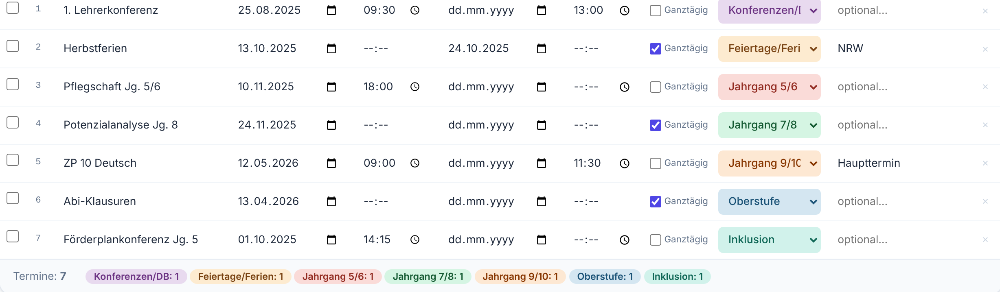

Termine eintragen, Kalender online.
Planen Sie Ihre Schultermine schulwochenweise in Excel, exportieren Sie sie als ICS-Datei und importieren Sie diese in IServ. Das WordPress-Plugin zeigt den Kalender auf der Schulwebsite an.
| Schulwoche | Montag | Termin | Kategorie |
|---|---|---|---|
| SW 00 | 24.08.2026 | Dienstbesprechung | Konferenzen/DB |
| SW 01 | 31.08.2026 | Einschulung Jahrgang 5 | Jahrgang 5/6 |
| SW 02 | 07.09.2026 | Klassenpflegschaft Jahrgang 5/6 | Jahrgang 5/6 |
| SW 03 | 14.09.2026 | Lehrerkonferenz | Konferenzen/DB |
| SW 04 | 21.09.2026 | Elternabend Jahrgang 5 | Jahrgang 5/6 |
| SW 05 | 28.09.2026 | Potenzialanalyse Jahrgang 8 | Jahrgang 7/8 |
| SW 06 | 05.10.2026 | Klausur Q1 GE LK1 | Oberstufe |
| SW 07 | 12.10.2026 | Förderplankonferenz | Inklusion |
- ICS Konverter
- Version 2.3
- Schulwochen-Vorlage
- Schuljahr 2026/27
- Terminkategorien
- 7, mit Farbe und Text
- Konverter
- läuft im Browser
Drei Werkzeuge für den Schulkalender
Der Konverter läuft im Browser, das WordPress-Plugin wird einmalig hochgeladen, die Schulwochen-Vorlage ermöglicht die Planung nach Schulwochen direkt in Excel.
-
ICS Konverter
Excel-Datei laden, Termine prüfen, als ICS exportieren. Die Termine werden lokal im Browser verarbeitet; es wird kein Konto benötigt.
- Import per Drag-and-drop, Schulwochen-Format wird automatisch erkannt
- Bearbeiten von Titel, Datum, Zeit und Kategorie in einer Tabelle
- Kalenderansicht nach Monaten zur Kontrolle vor dem Export
- ICS-Export mit Zeitzone Europe/Berlin (VTIMEZONE)
- Warnung beim Schließen des Tabs, solange Änderungen ungespeichert sind
-
WordPress-Plugin
Zeigt den Schulkalender aus dem IServ-iCal-Feed auf der Schulwebsite an, ohne manuelle Pflege.
- iCal-Feed direkt aus IServ, Cache mit Hintergrundaktualisierung
- Quartalsansicht, PDF-Export, Kategorie-Filter und Suche
- Kiosk-Modus für die IServ-Option „Eingebettet“ mit Token-Adresse
- Hinweis auf neue, geänderte und gelöschte Termine
- Bis zu fünf Schuljahres-Profile, Entwurf-Modus vor der Freigabe
Neuere Funktionen im Repository, etwa Monatsansicht und Gruppenfilter, sind in der ZIP-Datei auf dieser Seite noch nicht enthalten. Aktuelle Versionen finden Sie auf GitHub.
-
Schulwochen-Vorlage
Vorbereitete Excel-Datei für die Terminplanung nach Schulwochen, mit berechneten Montagen und Ferien aus einem eigenen Blatt.
- 42 Schulwochen (SW 00 bis SW 41) mit berechneten Montagen
- Ferien und Eckdaten im Blatt „Ferien“, Ferienwochen werden übersprungen
- Auswahllisten für Wochentag, Kategorie und Ganztägig
- 15 Zeilen je Schulwoche, Blatt „Anleitung“ mit Hinweisen
So läuft der Terminplan-Workflow
Von der leeren Tabelle bis zum aktuellen Kalender auf der Schulwebsite in sechs Schritten.
-
Excel-Vorlage öffnen und Ferien eintragen
Öffnen Sie die Schulwochen-Vorlage in Excel. Tragen Sie im Blatt „Ferien“ die Ferienzeiten und die Eckdaten des Schuljahres ein. Die Montage der Schulwochen werden daraus berechnet.
Ausfüllen müssen Sie nur die sichtbaren Spalten Wochentag bis Anmerkung. Die technischen Hilfsspalten sind ausgeblendet.
Blatt „Terminplan“ der Schulwochen-Vorlage (Auszug, Beispieleinträge) Schulwoche Zeitraum Wochentag Uhrzeit Titel Kategorie SW 03 14.09. bis 18.09. Mo 15:00 Lehrerkonferenz Konferenzen/DB SW 04 21.09. bis 25.09. Di 19:00 Elternabend Jg. 5 Jahrgang 5/6 SW 05 28.09. bis 02.10. Mi 08:00 Potenzialanalyse Jg. 8 Jahrgang 7/8 SW 06 05.10. bis 09.10. Do 08:00 Klausur Q1 GE LK1 Oberstufe -
Termine schulwochenweise eintragen
Wählen Sie im Blatt „Terminplan“ je Zeile den Wochentag (Mo bis Fr oder „Ganze Woche“) und die Kategorie aus der Liste. Tragen Sie bei zeitgenauen Terminen die Uhrzeit ein, sonst bleibt das Feld leer.
-
Konverter öffnen und Excel-Datei laden
Öffnen Sie die heruntergeladene HTML-Datei des Konverters im Browser. Ziehen Sie die gespeicherte XLSX-Datei in das Feld oder wählen Sie sie über den Dateidialog aus. Der Konverter erkennt das Schulwochen-Format und rechnet Wochentage in Datumsangaben um.
Für den Excel-Import lädt der Konverter die Bibliothek SheetJS aus dem Internet nach.

Ausschnitt aus dem Konverter mit den Beispieldaten des Programms. -
Importierte Termine prüfen
Der Konverter listet alle erkannten Termine. Titel, Datum, Uhrzeit und Kategorie lassen sich in der Tabelle ändern. Doppelte Einträge werden übersprungen, unvollständige Zeilen sind markiert. Die Kalenderansicht zeigt die Termine nach Monaten.
-
ICS-Datei herunterladen
Klicken Sie auf „ICS-Datei herunterladen“. Der Konverter erzeugt eine Datei nach RFC 5545 mit der Zeitzone Europe/Berlin, sodass Sommer- und Winterzeit stimmen.
Die ICS-Datei dient als Jahresvorlage. Kleinere Änderungen im laufenden Schuljahr pflegen Sie direkt in IServ.
BEGIN:VCALENDAR VERSION:2.0 PRODID:-//Terminplan//Konverter v2.3//DE X-WR-TIMEZONE:Europe/Berlin BEGIN:VTIMEZONE TZID:Europe/Berlin ... END:VTIMEZONE BEGIN:VEVENT DTSTART;TZID=Europe/Berlin:20250825T093000 DTEND;TZID=Europe/Berlin:20250825T130000 SUMMARY:1. Lehrerkonferenz CATEGORIES:Konferenzen END:VEVENT BEGIN:VEVENT DTSTART;VALUE=DATE:20251013 DTEND;VALUE=DATE:20251025 SUMMARY:Herbstferien CATEGORIES:Feiertage END:VEVENT ... END:VCALENDAR
Auszug einer vom Konverter erzeugten ICS-Datei (Beispieldaten). -
ICS-Datei in IServ importieren
In IServ: Kalender, Einstellungen (Zahnrad), „Importieren“, Datei auswählen, Zielkalender wählen und bestätigen. Das WordPress-Plugin liest den iCal-Feed dieses Kalenders; danach erscheinen die Termine auf der Schulwebsite.
Voraussetzung ist, dass die IT das Plugin einmalig eingerichtet hat. Die Schritte dafür stehen in der Installationsanleitung.
Was das Plugin im Hintergrund leistet
Technik, die ohne Build-System und ohne zusätzliche Dienste auskommt.
- Gespeicherter Stand sofort, Aktualisierung im Hintergrund
- Besucherinnen und Besucher sehen den Kalender ohne Wartezeit. Die Aktualisierung läuft per WP-Cron (Stale-While-Revalidate).
- Änderungserkennung
- Neue, geänderte und gelöschte Termine werden erkannt und beim nächsten Besuch in einem Banner angezeigt.
- PDF-Export
- Einzelnes Quartal oder gesamtes Schuljahr als PDF, mit Rückmeldung während des Ladens.
- Kiosk-Modus für IServ
- Der Kalender wird über eine Token-Adresse ohne Theme und ohne WordPress-Anmeldung als IServ-Inhalt eingebettet.
- Mehrere Schuljahre
- Bis zu fünf Profile mit eigener iCal-Adresse. Ein Entwurf bleibt für Administratoren sichtbar, bis er freigegeben wird.
- Ohne Composer und Build-Schritt
- Das Plugin besteht aus PHP-Dateien und einem Stylesheet. Sie laden die ZIP-Datei hoch und aktivieren das Plugin.
Sieben Kategorien, überall gleich
Dasselbe Kategorie- und Farbschema gilt im Konverter, in der Excel-Vorlage und im Plugin. Jede Kategorie ist durch Farbe und Beschriftung erkennbar, nie nur durch Farbe.
| Kategorie | Beispiele | Stichwörter |
|---|---|---|
| Jahrgang 5/6 | Einschulung, Orientierungsphase, Bücherausgabe | Jg 5, Jg 6, DST, Einschulung, Neue 5er |
| Jahrgang 7/8 | KAoA, Berufsfelderkundung, Potenzialanalyse, WP-Wahl | Jg 7, Jg 8, KAoA, WPM, Potenzialanalyse |
| Jahrgang 9/10 | Betriebspraktikum, ZP 10, Abschlussfahrt, Berufsberatung | Jg 9, Jg 10, BP, ZP 10, Abschlussfahrt |
| Oberstufe | EF, Q1, Q2, Abitur, Klausuren, Laufbahnkonferenz | EF, Q1, Q2, Abi, Klausur, Laufbahn |
| Inklusion | Förderplan, I-Helfer, Beratungsteam, Nachteilsausgleich | IFÖ, AL SuS, AOSF, Förderplan, Inklusion |
| Feiertage/Ferien | Ferien, Feiertage, bewegliche Ferientage | Ferien, Feiertag, Weihnachten, Ostern |
| Konferenzen/DB | Dienstbesprechungen, Fachkonferenzen, Studientag | LK, FaKo, DB, TBS, SchiLF, Studientag |
Häufige Fragen
Was unterscheidet die Schulwochen-Vorlage von der klassischen Vorlage?
Die Schulwochen-Vorlage (Terminplan_Schulwochen_Vorlage.xlsx) ist nach Schulwochen (SW 00 bis SW 41) aufgebaut. Ferien und Eckdaten tragen Sie einmal im Blatt „Ferien“ ein, die Montage der Schulwochen werden berechnet. Termine erfassen Sie mit Wochentag statt mit Datum; der Konverter rechnet sie in echte Datumsangaben um.
Die klassische Vorlage (im Konverter unter „Leere Vorlage“) ist eine einfache Tabelle mit einem Startdatum je Zeile. Sie eignet sich für einzelne Termine und die Nachbearbeitung.
Muss ich den Konverter installieren?
Nein. Der Konverter ist eine einzelne HTML-Datei, die Sie lokal im Browser öffnen. Ihre Termine verlassen Ihren Rechner nicht. Für den Excel-Import lädt die Datei beim Öffnen die Bibliothek SheetJS von cdnjs.cloudflare.com nach; dafür ist eine Internetverbindung nötig.
Was passiert, wenn ich in IServ einen Termin ändere?
Das Plugin ruft den iCal-Feed im Hintergrund ab (WP-Cron) und vergleicht ihn mit dem letzten Stand. Beim nächsten Seitenaufruf weist ein Banner auf neue, geänderte und gelöschte Termine hin.
Wie binde ich den Kalender in IServ ein?
Das Plugin unterstützt den Kiosk-Modus für die IServ-Option „Eingebettet“. Die WordPress-Seite wird über eine Token-Adresse ohne Theme eingebettet, ohne dass Nutzerinnen und Nutzer WordPress oder eine Anmeldung sehen. Die Token-Adresse konfigurieren Sie in den Plugin-Einstellungen.
Welche Datums- und Zeitformate erkennt der Konverter?
TT.MM.JJJJ (zum Beispiel 18.08.2026) und JJJJ-MM-TT sowie Uhrzeiten im Format HH:MM. Leere Zeitfelder ergeben ganztägige Termine.
Kann ich eigene Kategorien anlegen?
Ja. Im Konverter unter „Kategorien & Einstellungen“ können Sie Kategorien hinzufügen, umbenennen, einfärben und mit Stichwörtern für die automatische Zuordnung versehen. Es sind höchstens 20 Kategorien möglich.
Wie aktuell ist der Kalender auf der Website?
Das Plugin zeigt sofort den gespeicherten Stand und aktualisiert ihn im Hintergrund (Stale-While-Revalidate). Die Cache-Dauer stellen Sie im Plugin ein; sie beträgt standardmäßig 60 Minuten, mindestens 5 Minuten.
Wie importiere ich die ICS-Datei erneut, ohne Duplikate?
Beim Excel-Import erkennt der Konverter identische Termine (gleicher Titel und gleiches Startdatum) und überspringt sie. Empfehlenswert ist, die ICS-Datei als Jahresvorlage zu nutzen und Änderungen im laufenden Schuljahr direkt in IServ zu pflegen.
Kostenlos und quelloffen
Plugin und Konverter stehen anderen Schulen kostenlos zur Verfügung (GPL v2 oder neuer). Es ist ein privates Projekt ohne Gewährleistung, ohne Supportzusage und ohne kommerzielle Absicht. Vor dem Einsatz prüfen Sie Eignung, Datenschutz und Sicherheit in Ihrer Schule selbst.